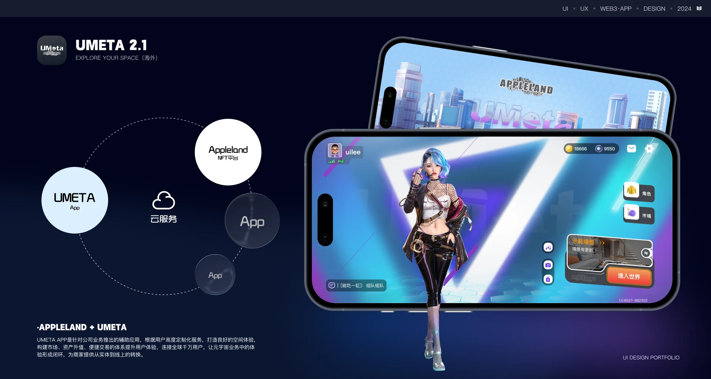
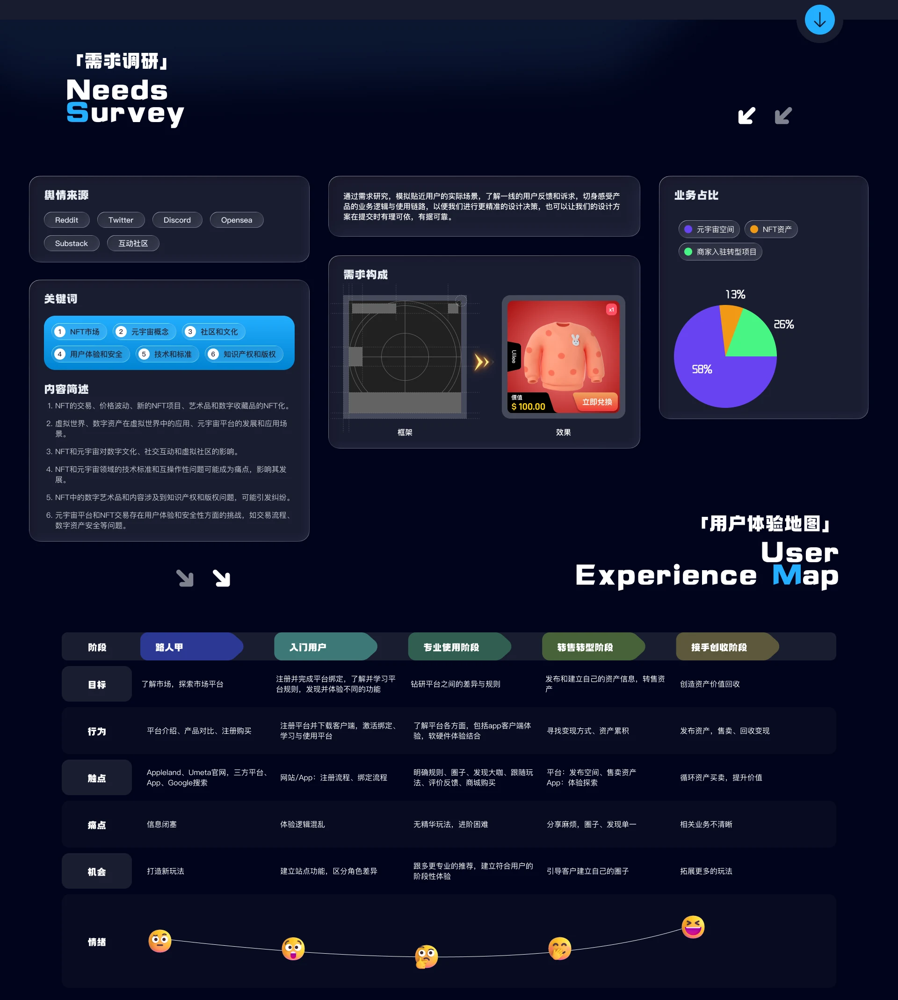
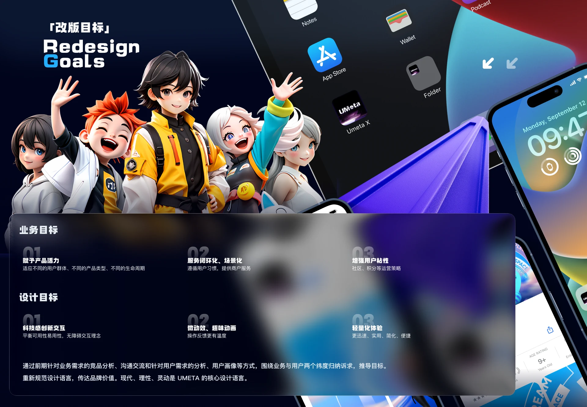
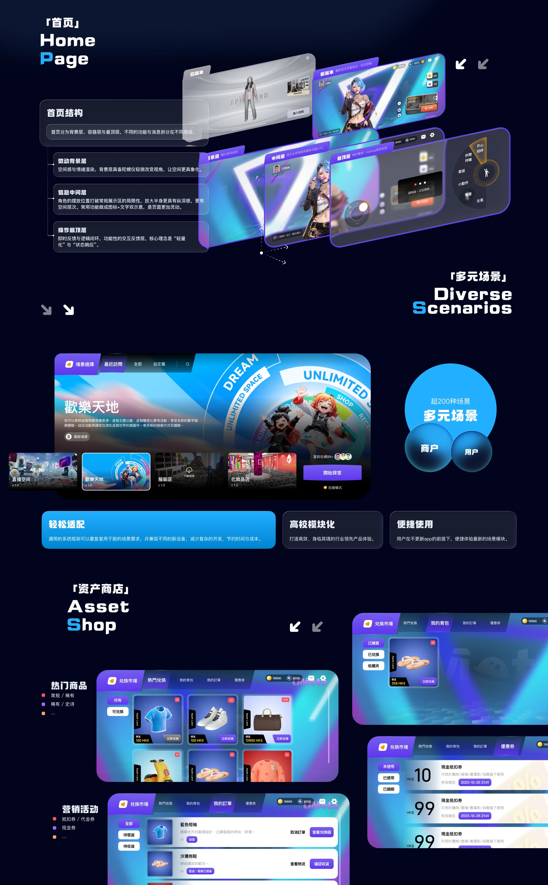
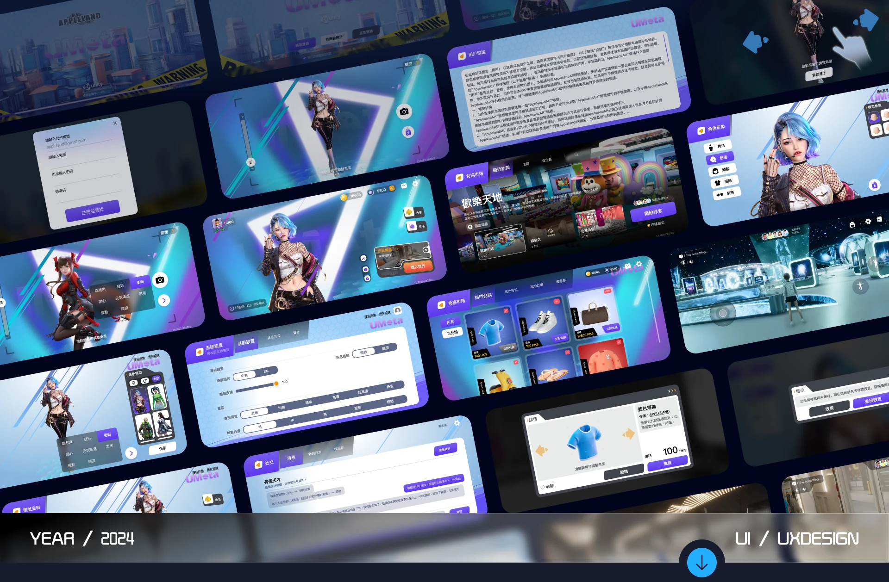

05 / System Design / 2023.07 - 2024.02
Umeta 2.1
UMeta & UMeta AR (virtual social & AR interaction), gaming direction
Overview
Led the end-to-end design upgrade of Umeta, a metaverse app, together with its brand site. Reworking the underlying logic and the interaction model lifted retention and transaction rate on core flows by 10%. Created the first “treasure hunt” AR interaction model, using game mechanics to break the NFT distribution bottleneck. Diagnosed and rebuilt flawed runtime logic, keeping multi-user real-time scenes smooth and stable.
Requirements research
Distinguish documents from actions. Keep unavailable commands visible, with a reason. Share the active selection between keyboard and pointer, and do not fire Enter while an IME composition is still being confirmed.
Business goals
- Give the product a pulse
- Closed-loop, scenario-driven service
- Stronger user retention
- Tech-forward interaction
- Micro-motion & playful animation
- Lightweight experience
My Role
Led the visual rebuild of Umeta and the brand site, covering the interaction model and the asset pipeline. Mapped Design Tokens to front-end logic and kept delivery above 95% design fidelity. Designed the treasure-hunt AR interaction model to open a game-driven path for NFT distribution. Diagnosed and rebuilt the underlying runtime paths, keeping multi-user sessions smooth.
Screens





Other work
- LKSY · All Platforms2024 - 2026
- KEKE · IP Design2025.03
- Changting Assistant App2020.01 - 2023.05
- XiaoWo Accessibility Call Assistant2020.01 - 2023.05
- Appleland Web2023.07 - 2024.02
- Modeller’s Circle2022.08 - 2023.01
- ZhiPing Smart Screen2021.07 - 2023.01
- Corporate Website Design2020 - 2023
Have something to build?
Available for remote UI/UX design outsourcing and freelance work: B2B dashboards, WeChat mini programs, mobile interfaces, accessibility design, prototypes and design specs.
Email 965333099@qq.com · WeChat and phone 18666099550